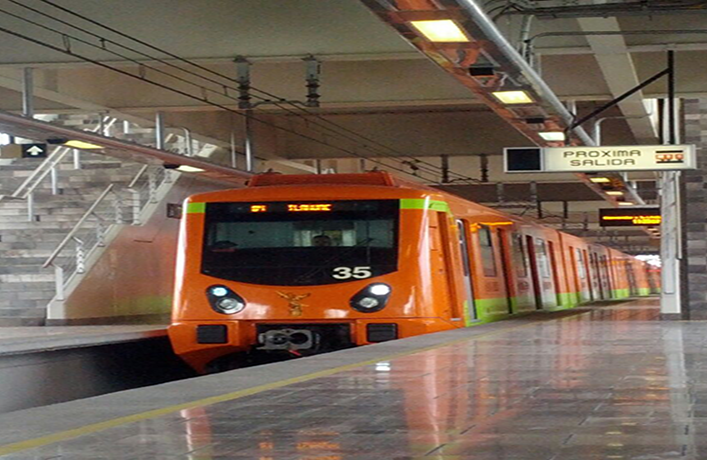
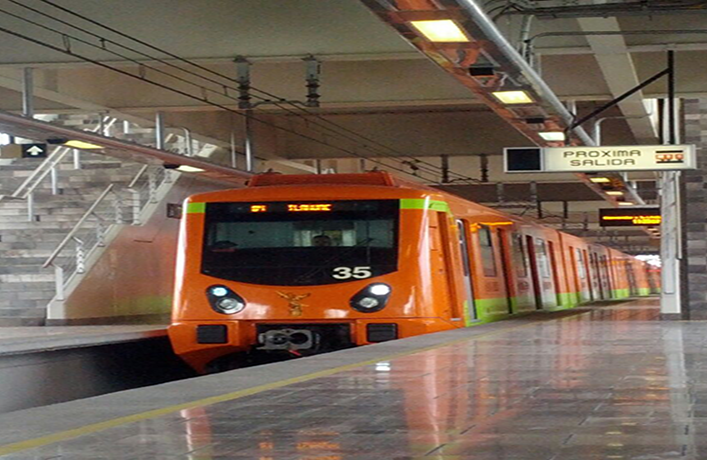

PCL L-12
SISTEMA DE TRANSPORTE COLECTIVO METRO
Gerencia de Instalaciones Fijas
Subgerencia de Instalaciones Electrónicas
Coordinación de Automatización y Control
Jefatura de Sección de Mando Centralizado Línea 12
 
